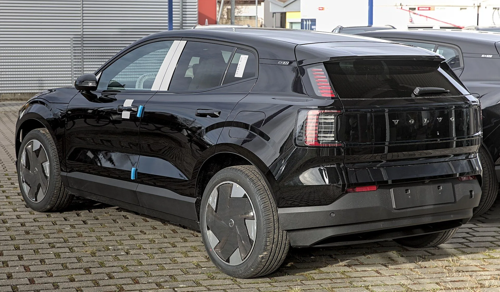
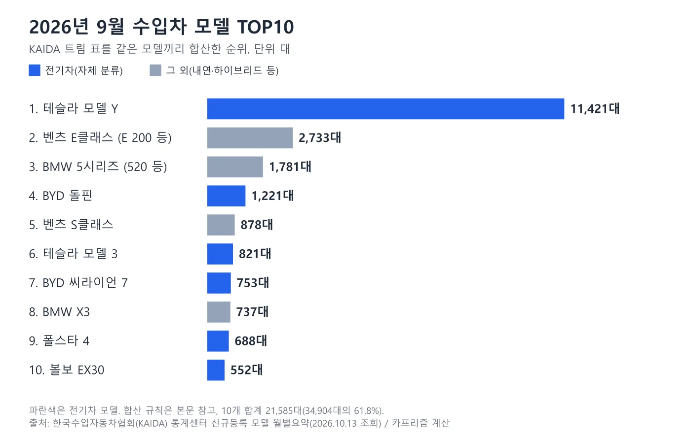
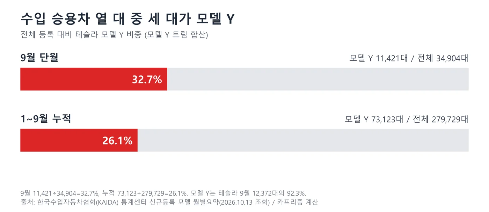
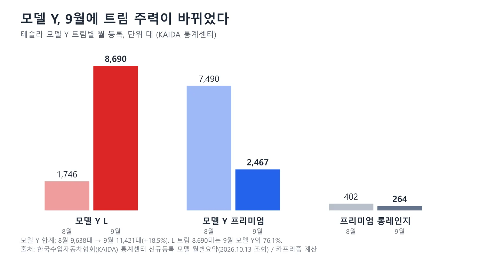
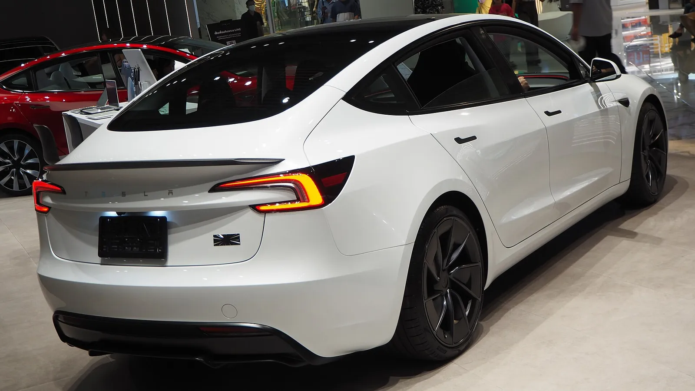
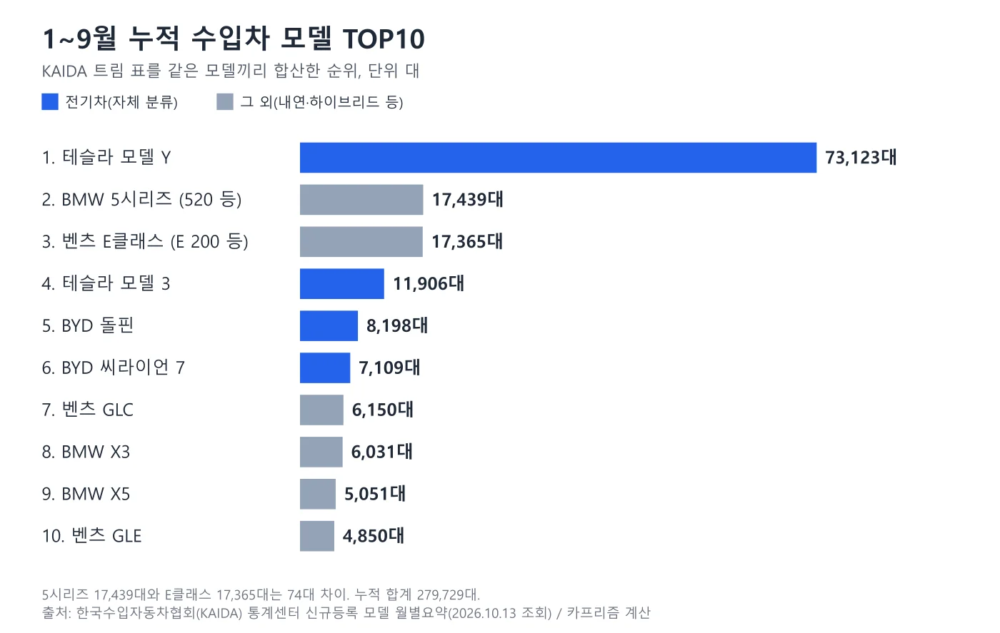
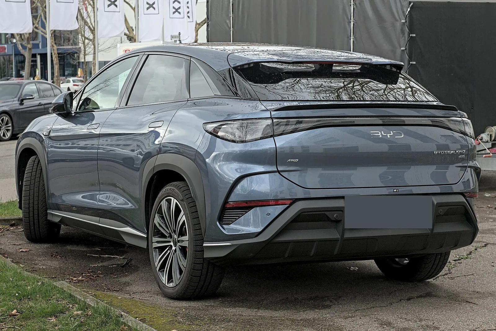
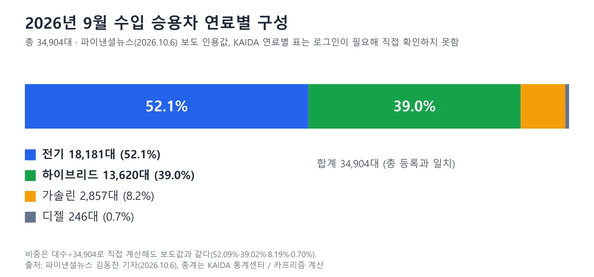
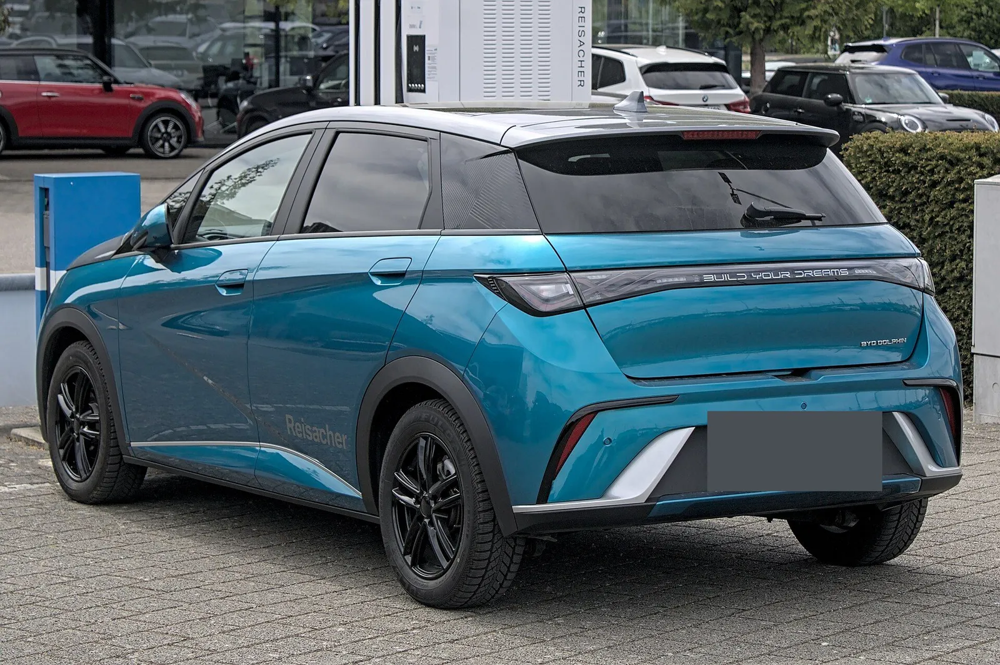

▲ 테슬라 모델 Y(신형 전면부 차량, 미국 촬영). 국내 판매 사양과 같은지는 확인하지 않았다 ⓒ OWS Photography, Wikimedia Commons (CC BY 4.0)
"9월 수입차 베스트셀링 1위는 모델 Y L 8,690대." 이 보도는 맞지만, KAIDA(한국수입자동차협회) 베스트셀링 표의 "모델"은 모델명이 아니라 트림 단위다. 같은 모델 Y가 L·프리미엄·프리미엄 롱레인지로 따로 집계되기 때문에, 모델 단위로 합치면 순위와 비중이 달라진다. 이 글은 KAIDA 통계센터의 베스트셀링 표(트림 단위)와 모델 월별요약 표를 2026년 10월 13일 직접 조회하고(회원 전용 '모델(그룹)' 표는 열지 않았다), 트림을 같은 모델끼리 직접 합산해 2026년 9월 단월과 1~9월 누적 TOP10, 모델 Y의 비중, 전기차 모델과 그 외의 구성을 정리했다. 연료별 구성(전기 52.1% 등)은 KAIDA 연료별 표가 로그인을 요구해 열 수 없었으므로 파이낸셜뉴스 보도를 인용했다.
브랜드 단위 순위는 BYD 9월 등록 기사, 5시리즈와 E클래스의 74대 차이는 5시리즈 vs E클래스 기사, 8월 시장은 8월 수입차 시장 기사에서 다뤘다. 이 글은 모델 단위 순위와 연료 구성을 한 표로 묶는 데 집중한다.
1. "모델"과 "트림"은 다르다 — 합산 방식과 검증
KAIDA 모델 월별요약 표는 브랜드 아래에 트림(예: 520, 523d, 530 xDrive)을 한 줄씩 나열하고, 베스트셀링 표도 같은 트림 이름으로 순위를 매긴다. 그래서 "모델 Y L"과 "모델 Y 프리미엄"은 서로 다른 줄이다. 이 글은 시리즈·모델명이 같은 트림을 더했고, AMG·M 같은 고성능 라인과 마이바흐, 전기 파생(i5, EQE 등)은 따로 두었다. 같은 방식으로 합산한 5시리즈와 E클래스 수치가 앞서 발행한 기사와 일치하는지 먼저 확인했다.
| 모델 | 합산한 트림(9월) | 9월 | 1~9월 | 기존 기사와 |
|---|---|---|---|---|
| BMW 5시리즈 | 520 1,204 + 523d 76 + 523d xDrive 10 + 530 xDrive 367 + 530e 92 + 530e xDrive 29 + 550e xDrive 3 | 1,781 | 17,439 | 일치 |
| 벤츠 E클래스 | E 200 2,133 + E 220 d 29 + E 300 4MATIC 499 + E 350 1 + E 350 e 39 + E 450 32 | 2,733 | 17,365 | 일치 |
| 테슬라 모델 Y | L 8,690 + 프리미엄 2,467 + 프리미엄 롱레인지 264 | 11,421 | 73,123 | 테슬라 합계 12,372대와 맞춤 확인 |
테슬라는 9월 모델 Y 11,421대 + 모델 3 821대 + 사이버트럭 130대 = 12,372대로 KAIDA 브랜드 합계와 정확히 같다. 전체 트림을 모두 더하면 9월 34,904대, 8월 29,817대, 전년 9월 32,834대, 1~9월 279,729대로 표의 총계와 일치한다. 모델 합산 기준(AMG·M·마이바흐 분리, GLC·GLE는 쿠페 포함)은 카프리즘이 정한 것이어서, 다른 매체의 "모델별" 순위와 다를 수 있다.
📍 트림 이름이 바뀌면 전년 비교가 깨진다
2025년 9월 KAIDA 표에는 모델 Y가 "Model Y" 7,383대와 "Model Y Long Range" 978대로 올라 있고, 2026년 9월에는 "L"·"프리미엄"·"프리미엄 롱레인지"로 바뀌었다. 트림 줄끼리는 전년 비교가 안 되고, 모델로 합쳐야 8,361대 → 11,421대(+36.6%)로 비교된다. 이것이 모델 단위로 합산해야 하는 가장 큰 이유다.
2. 9월 모델 합산 TOP10 — 1위 모델 Y가 2~10위 합보다 많다
9월 TOP10 합계는 21,585대로 수입 승용차 34,904대의 61.8%다. 1위 모델 Y(11,421대)는 2위부터 10위까지의 합(10,164대)보다 1,257대 많다. 순위는 같은 표의 트림 대수를 위 규칙으로 더한 값이며, 8월·전년 9월 대비 증감도 같은 방식으로 계산했다.
| 순위 | 모델 | 9월 | 전체 비중 | 8월 | 전월비 | 2025.9 | 전년비 |
|---|---|---|---|---|---|---|---|
| 1 | 테슬라 모델 Y(전기) | 11,421 | 32.7% | 9,638 | +18.5% | 8,361 | +36.6% |
| 2 | 벤츠 E클래스 | 2,733 | 7.8% | 1,404 | +94.7% | 3,239 | -15.6% |
| 3 | BMW 5시리즈 | 1,781 | 5.1% | 1,902 | -6.4% | 2,196 | -18.9% |
| 4 | BYD 돌핀(전기) | 1,221 | 3.5% | 1,202 | +1.6% | 0 | 해당 없음 |
| 5 | 벤츠 S클래스 | 878 | 2.5% | 464 | +89.2% | 491 | +78.8% |
| 6 | 테슬라 모델 3(전기) | 821 | 2.4% | 693 | +18.5% | 708 | +16.0% |
| 7 | BYD 씨라이언 7(전기) | 753 | 2.2% | 819 | -8.1% | 825 | -8.7% |
| 8 | BMW X3 | 737 | 2.1% | 638 | +15.5% | 578 | +27.5% |
| 9 | 폴스타 4(전기) | 688 | 2.0% | 262 | +162.6% | 361 | +90.6% |
| 10 | 볼보 EX30(전기) | 552 | 1.6% | 33 | +1,572.7% | 111 | +397.3% |
E클래스가 8월 1,404대에서 9월 2,733대로 거의 두 배가 되면서 5시리즈를 952대 앞섰다(단월 기준). 돌핀의 2025년 9월 0대는 KAIDA 표에 그 기간 등록이 없다는 뜻으로, 전년비를 계산하지 않았다. EX30의 +1,572.7%는 8월이 33대로 낮아 생긴 수치이며 판매 추세로 읽으면 곤란하다. 8월이 낮았던 이유는 확인하지 못했다.

▲ 볼보 EX30 후측면(독일 촬영). 9월 552대로 TOP10 10위다. 한국 판매 사양과 같은지는 확인하지 않았다 ⓒ Alexander-93, Wikimedia Commons (CC BY-SA 4.0)

▲ 2026년 9월 모델 합산 TOP10. 파란 막대는 전기차 모델이다 ⓒ 카프리즘 제작 도표, 출처 KAIDA 통계센터

▲ 벤츠 E클래스(W214) 후면. 트렁크 리드의 E 200 배지가 보이는 차량이다. 번호판은 원본에서 가려져 있다 ⓒ Damian B Oh, Wikimedia Commons (CC BY-SA 4.0)
3. 트림 단위 TOP10 — 보도에 나온 "1위 8,690대"의 정체
보도에서 인용되는 순위는 KAIDA 베스트셀링 표(트림 단위)다. 이 표의 9월 1~3위 대수는 파이낸셜뉴스 보도(모델 Y L 8,690대, 모델 Y 프리미엄 2,467대, E 200 2,133대)와 같았다. 아래는 같은 표의 9월 10위까지와 1~9월 누적 10위까지다.
| 순위 | 9월 트림 | 대수 | 1~9월 누적 트림 | 대수 |
|---|---|---|---|---|
| 1 | 테슬라 모델 Y L | 8,690 | 테슬라 모델 Y 프리미엄 | 48,336 |
| 2 | 테슬라 모델 Y 프리미엄 | 2,467 | 테슬라 모델 Y L | 17,384 |
| 3 | 벤츠 E 200 | 2,133 | BMW 520 | 11,177 |
| 4 | BMW 520 | 1,204 | 벤츠 E 200 | 9,102 |
| 5 | BYD 돌핀 | 1,153 | BYD 돌핀 | 7,676 |
| 6 | 테슬라 모델 3 프리미엄 롱레인지 | 814 | 테슬라 모델 Y 프리미엄 롱레인지 | 7,403 |
| 7 | BYD 씨라이언 7 | 745 | BYD 씨라이언 7 | 7,101 |
| 8 | 폴스타 4 | 688 | 테슬라 모델 3 프리미엄 롱레인지 | 6,697 |
| 9 | BMW X3 2.0 | 552 | 벤츠 E 300 4MATIC | 6,089 |
| 10 | 벤츠 E 300 4MATIC | 499 | BMW X3 2.0 | 4,511 |
트림 순위에서는 모델 Y가 9월 1·2위, 누적 1·2·6위를 차지해 상위권이 모델 Y 한 모델로 가득 찬다. 반면 5시리즈와 E클래스는 각각 520, E 200 한 트림이 사실상 중심이어서(1~9월 520은 5시리즈의 64.1%, E 200은 E클래스의 52.4%) 트림 순위에서도 TOP5에 들어간다. 트림 순위는 "무슨 사양이 팔리나"를, 모델 합산 순위는 "무슨 차가 팔리나"를 보여 준다.
4. 모델 Y는 전체의 32.7% — 9월에 주력 트림이 바뀌었다
모델 Y 합산 11,421대는 9월 수입 승용차 34,904대의 32.7%, 1~9월 누적 73,123대는 누적 279,729대의 26.1%다. 테슬라 브랜드 안에서는 9월 12,372대의 92.3%, 1~9월 테슬라 누적 89,148대의 82.0%가 모델 Y다. 모델 3는 9월 821대(전체의 2.4%)로 상대적으로 작다.

▲ 모델 Y 비중. 같은 모델 Y라도 월 비중(32.7%)이 누적(26.1%)보다 높다 ⓒ 카프리즘 제작 도표, 출처 KAIDA 통계센터
9월에 눈에 띄는 변화는 트림 구성이다. 8월에는 프리미엄 7,490대, L 1,746대였는데 9월에는 L 8,690대, 프리미엄 2,467대로 뒤바뀌었다. KAIDA 표의 가격 열 값은 모델 Y L 72,990, 프리미엄 49,990(천 원 단위)이며, 보조금 반영 여부와 실구매가는 확인하지 않았다. 트림 비중이 바뀐 이유는 KAIDA 표만으로는 알 수 없고, 이 글은 확인하지 못했다. 가격·보조금 비교는 모델 Y·아이오닉 5·EV5 보조금 비교 기사, V2L 등 사양 변경은 모델 3·Y V2L 기사를 참고한다.

▲ 모델 Y 트림별 8월(연한 막대)과 9월(진한 막대) 등록. 합계는 9,638대에서 11,421대로 늘었다 ⓒ 카프리즘 제작 도표, 출처 KAIDA 통계센터

▲ 테슬라 모델 3(하이랜드, 전시 차량). 촬영지와 트림은 확정하지 않았다 ⓒ Chanokchon / Wikimedia Commons, CC BY-SA 4.0
5. 1~9월 누적 모델 순위 — 1위 압도, 2·3위는 74대 차이
누적 순위는 모델 Y가 73,123대로 압도적이고, 2위 5시리즈(17,439대)와 3위 E클래스(17,365대)는 74대 차이다. 4~6위는 모델 3(11,906대), 돌핀(8,198대), 씨라이언 7(7,109대)로 전기차가 차지한다. 2025년 1~9월과 비교하면 모델 Y는 37,035대에서 73,123대로 97.4% 늘었다. TOP10 합계는 157,222대로 누적 279,729대의 56.2%다.
| 순위 | 모델 | 1~9월 | 누적 비중 | 2025년 1~9월 | 증감 |
|---|---|---|---|---|---|
| 1 | 테슬라 모델 Y | 73,123 | 26.1% | 37,035 | +97.4% |
| 2 | BMW 5시리즈 | 17,439 | 6.2% | 18,206 | -4.2% |
| 3 | 벤츠 E클래스 | 17,365 | 6.2% | 19,679 | -11.8% |
| 4 | 테슬라 모델 3 | 11,906 | 4.3% | 6,428 | +85.2% |
| 5 | BYD 돌핀 | 8,198 | 2.9% | 0 | 해당 없음 |
| 6 | BYD 씨라이언 7 | 7,109 | 2.5% | 828 | +758.6% |
| 7 | 벤츠 GLC | 6,150 | 2.2% | 6,045 | +1.7% |
| 8 | BMW X3 | 6,031 | 2.2% | 4,960 | +21.6% |
| 9 | BMW X5 | 5,051 | 1.8% | 4,661 | +8.4% |
| 10 | 벤츠 GLE | 4,850 | 1.7% | 4,092 | +18.5% |
TOP10 중 전년보다 줄어든 모델은 5시리즈와 E클래스뿐이다. 두 모델은 누적 격차가 74대에 불과한데 9월 단월에는 E클래스가 952대 앞섰다. 이 단월 격차가 이어지면 누적 순위가 바뀔 수 있지만, 이 글은 전망하지 않고 현재 격차만 전한다.

▲ 1~9월 누적 모델 합산 TOP10. 5시리즈와 E클래스는 74대 차이다 ⓒ 카프리즘 제작 도표, 출처 KAIDA 통계센터

▲ BYD 씨라이언 07 EV(해외명, 국내 명칭 씨라이언 7) 후측면. 누적 6위(7,109대)다. 독일 번호판은 가림 처리했다. 한국 판매 사양과 같은지는 확인하지 않았다 ⓒ Alexander Migl, Wikimedia Commons (CC BY-SA 4.0)

▲ BMW 5시리즈(G60) 전면. 원본 파일명에는 520i M 스포츠로 적혀 있고 번호판은 가려져 있다 ⓒ Damian B Oh, Wikimedia Commons (CC BY-SA 4.0)
6. 9월 연료별 구성 — 전기 52.1%, 하이브리드 39.0%
연료별 구성은 KAIDA 연료별 표가 로그인을 요구해(회원 전용은 열지 않았다) 직접 확인하지 못했고, 파이낸셜뉴스(2026.10.6, 김동찬 기자)가 보도한 값을 인용한다. 보도 기준 9월 수입 승용차 34,904대 중 전기차 18,181대(52.1%), 하이브리드 13,620대(39.0%), 가솔린 2,857대(8.2%), 디젤 246대(0.7%)다. 파이낸셜뉴스 원문 바로가기 네 항목을 더하면 34,904대로 총 등록과 맞고, 대수÷34,904로 계산한 비중도 보도값과 같다.

▲ 연료별 구성(보도 인용). 디젤은 0.7%로 막대에서 거의 보이지 않는다 ⓒ 카프리즘 제작 도표, 출처 파이낸셜뉴스·KAIDA
| 연료 | 대수 | 비중(보도) | 카프리즘 재계산 |
|---|---|---|---|
| 전기 | 18,181 | 52.1% | 52.09% |
| 하이브리드 | 13,620 | 39.0% | 39.02% |
| 가솔린 | 2,857 | 8.2% | 8.19% |
| 디젤 | 246 | 0.7% | 0.70% |
| 합계 | 34,904 | 100% | KAIDA 총계와 일치 |
📍 가솔린 8.2%가 의외로 작은 이유
E 200(2,133대), 520(1,204대), X3 2.0(552대) 세 트림만 더해도 3,889대로 보도된 가솔린 합계 2,857대보다 많다. 따라서 이 트림 중 적어도 일부는 KAIDA 연료 분류에서 가솔린이 아니라 하이브리드로 잡혔다고 볼 수밖에 없다(48V 마일드 하이브리드 때문으로 추정되지만, KAIDA 분류 기준 문서는 확인하지 못했다). "하이브리드 39.0%"를 토요타·렉서스 같은 풀 하이브리드 판매 비중으로 읽으면 안 된다.
7. 전기차 모델 vs 그 외 — 모델 단위로 풀어 본 구성
KAIDA 모델 표의 트림 이름으로 순수 전기차를 직접 분류해 더하면 9월 18,129대(51.9%)다. 보도된 전기 18,181대와는 52대(0.15%p) 차이로, 분류 기준 차이로 보이지만 원인은 확인하지 못했다. 분류 기준은 테슬라·폴스타·지커 전 트림, BYD DM-i 제외 전 트림, 볼보 EX·ES, BMW i·iX, 벤츠 EQ 계열, 아우디 e-tron 계열, 포르쉐 타이칸·마칸 4/4S/GTS/터보, 미니 전기, 폭스바겐 ID, 캐딜락 이스컬레이드 IQ, 롤스로이스 스펙터다.
| 브랜드 | 9월 전기차 | 전기차 중 비중 | 8월 | 1~9월 |
|---|---|---|---|---|
| 테슬라 | 12,372 | 68.2% | 10,400 | 89,148 |
| BYD(DM-i 제외) | 2,303 | 12.7% | 2,502 | 19,269 |
| 볼보(EX·ES) | 867 | 4.8% | 112 | 2,983 |
| BMW(i 계열) | 786 | 4.3% | 900 | 6,681 |
| 폴스타 | 769 | 4.2% | 290 | 3,719 |
| 포르쉐(타이칸·마칸) | 353 | 1.9% | 301 | 2,692 |
| 폭스바겐(ID) | 334 | 1.8% | 130 | 2,015 |
| 미니(전기) | 174 | 1.0% | 237 | 1,750 |
| 벤츠(EQ 계열) | 104 | 0.6% | 235 | 1,864 |
| 지커·아우디·캐딜락·롤스로이스 | 67 | 0.4% | - | - |
| 합계 | 18,129 | 100% | - | - |
전기차 18,129대 중 모델 Y 한 모델이 11,421대(63.0%)이고, 테슬라 전체는 68.2%다. TOP10 안의 전기차 6개 모델 합계는 15,456대로 전기차 전체의 85.3%다. 반대로 전기가 아닌 모델의 TOP은 E클래스(2,733대), 5시리즈(1,781대), S클래스(878대), X3(737대) 순이다. 하이브리드 전용에 가까운 토요타(961대, GR86 제외)와 렉서스(1,063대, LS500 제외)는 합쳐 2,024대로 보도된 하이브리드 13,620대의 14.9%에 그친다. 나머지 하이브리드는 독일 브랜드 등에서 나왔다고 볼 수밖에 없지만, 어떤 트림이 어디에 들어갔는지는 확인하지 못했다.

▲ BYD 돌핀(유럽 판매형, 독일 촬영) 후측면. 한국 판매 사양과 세부 사양이 같은지는 확인하지 않았다. 독일 번호판은 가림 처리했다 ⓒ Alexander-93, Wikimedia Commons (CC BY-SA 4.0)
8. 순위를 읽을 때 주의할 점
- 트림 순위와 모델 순위를 섞지 않기: 보도의 "1위 모델 Y L 8,690대"는 트림 기준이다. 모델 Y 전체는 11,421대다.
- 단월과 누적 구분: 9월 E클래스가 5시리즈를 앞서도 누적은 5시리즈가 74대 앞선다.
- 연료 분류: 하이브리드 39.0%에는 마일드 하이브리드가 상당 부분 들어갔을 가능성이 있다(위 산술).
- 수입 승용차만: 수입차 등록 통계이며 국산차는 포함되지 않는다. 국산차와의 비교는 국산·수입 판매 비중 기사를 참고한다.
- 차량 사진: 이 글의 사진은 해외 촬영·전시 차량으로 한국 판매 사양과 다를 수 있다.
9. 이 글이 확인하지 못한 것
- KAIDA 연료별 표와 회원 전용 '모델(그룹)' 표: 로그인이 필요해 열지 않았고, 연료별 대수는 파이낸셜뉴스 보도를 인용했다
- 연료 분류 기준: 어떤 트림이 하이브리드·가솔린으로 분류됐는지, 18,129대(자체 분류)와 18,181대(보도)의 52대 차이 원인
- 모델 합산 기준: 카프리즘이 정한 규칙이며 KAIDA의 공식 모델 순위가 아니다. 규칙을 바꾸면(예: 모델 Y L을 별도 모델로 보면) 순위가 달라진다
- 모델 Y 트림 비중 변화·E클래스 9월 급증·EX30 급증의 이유, 모델 Y의 실구매가·보조금
10. 요약
KAIDA 통계센터 표(트림 단위)를 같은 모델끼리 합산하면 2026년 9월 수입차 1위는 모델 Y 11,421대(전체의 32.7%), 2위 E클래스 2,733대, 3위 5시리즈 1,781대, 4위 돌핀 1,221대다. 보도의 "1위 모델 Y L 8,690대"는 모델이 아니라 트림 기준 수치다.
1~9월 누적은 모델 Y 73,123대(26.1%), 5시리즈 17,439대, E클래스 17,365대 순이며 두 독일 세단의 차이는 74대다. 9월 TOP10 10개 모델 중 6개가 전기차이고 합계는 9월 전체의 61.8%다.
보도된 9월 연료별 구성은 전기 52.1%, 하이브리드 39.0%, 가솔린 8.2%, 디젤 0.7%이고, KAIDA 연료별 표는 직접 확인하지 못했다. 가솔린 합계(2,857대)가 E 200·520·X3 2.0 세 트림 합(3,889대)보다 적어, 하이브리드에 마일드 하이브리드가 들어갔을 가능성이 크지만 분류 기준은 확인하지 못했다.